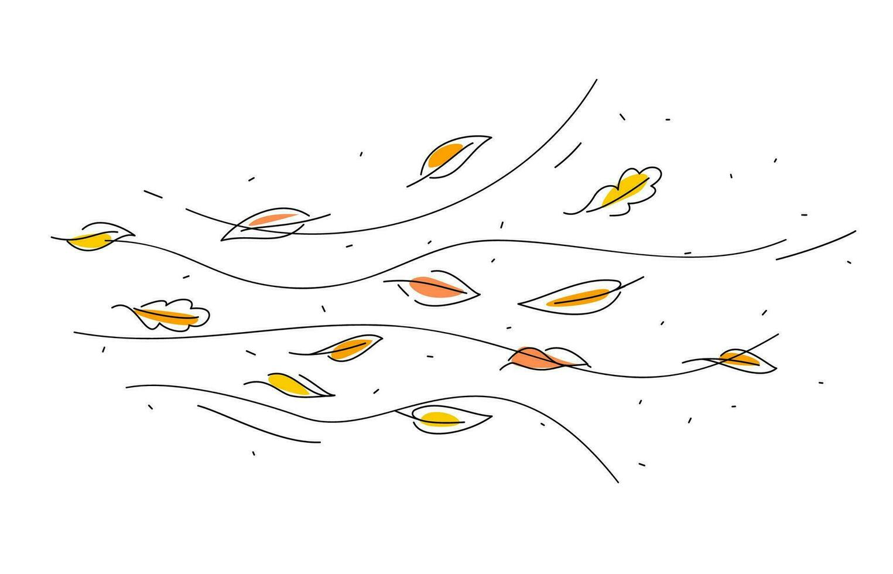
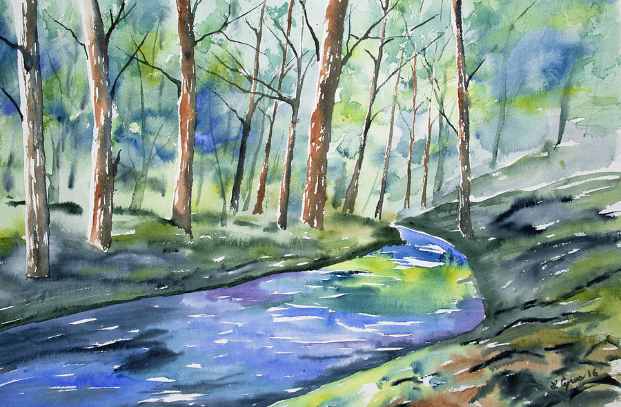
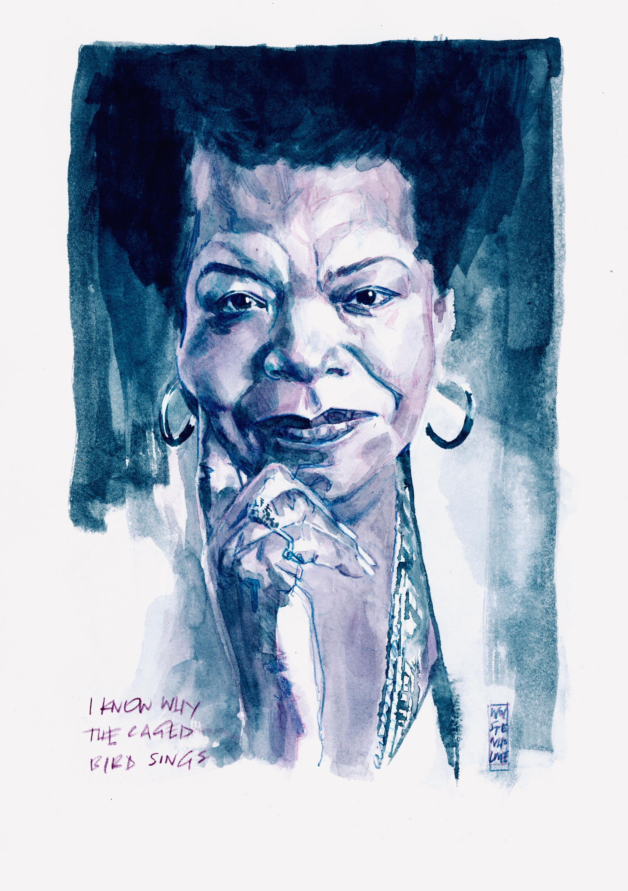
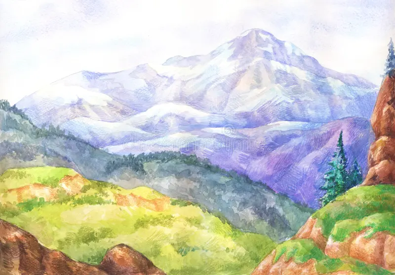

I Know Why the Caged Bird Sings
By Maya Angelou
The free bird leaps
on the back of the wind

and floats downstream

till the current ends
and dips his wings
in the orange sun rays
and dares to claim the sky.
But a bird that stalks
down his narrow cage
can seldom see through

his bars of rage
his wings are clipped and
his feet are tied

so he opens his throat to sing.
The caged bird sings

with fearful trill
of the things unknown
but longed for still
and his tune is heard
on the distant hill for the caged bird
sings of freedom
The free bird thinks of another breeze

and the trade winds soft through the sighing trees
and the fat worms waiting on a dawn-bright lawn
and he names the sky his own.
But a caged bird stands on the grave of dreams